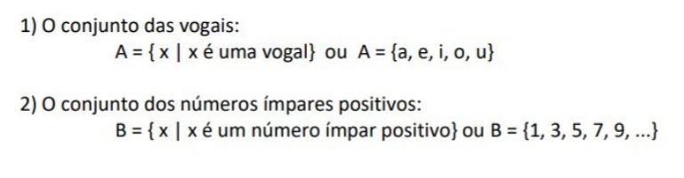
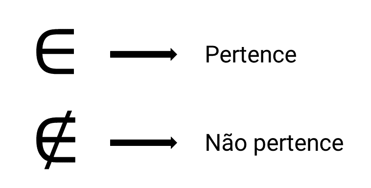
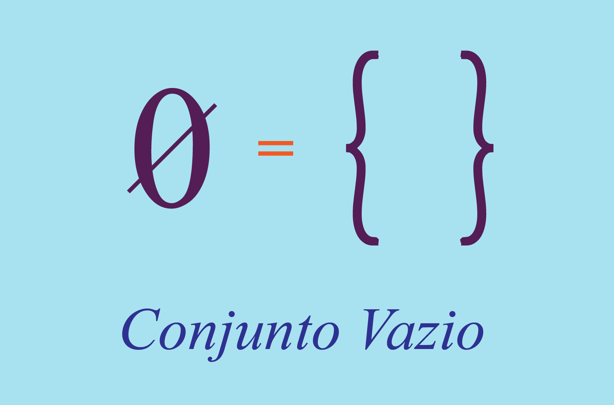
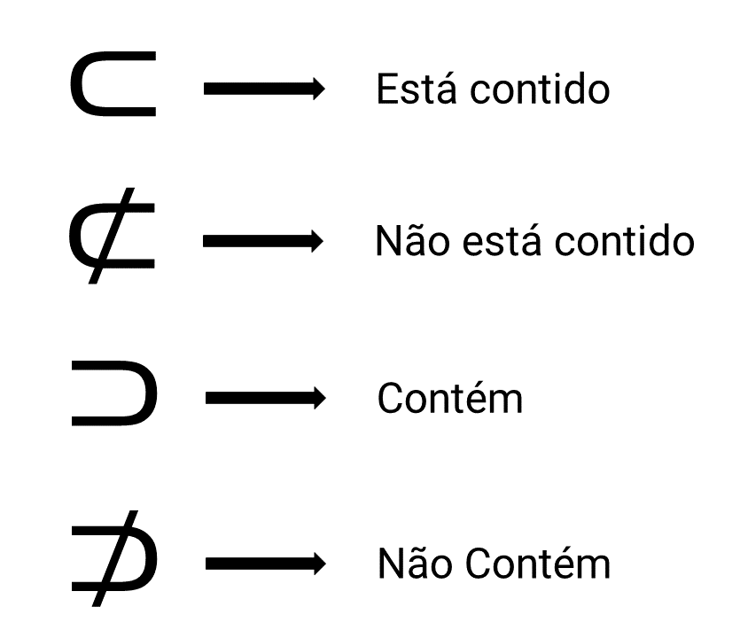

CONJUNTOS
O conjunto é um agrupamento de elementos. Ele pode indicar os elementos pertencentes, ou os próprios elementos que fazem parte da seleção.
Exemplo:

Exemplo de conjuntos, disponibilizadas pela professora Dra. VALERIA ESPINDOLA LESSA, no material didático: MD2 - Conjuntos e Conjuntos Numéricos, na página 1, disponível no SIGAA, para a turma de informática do primeiro ano, de 2023, do IFRS, Campus Erechim.
Podemos estabelecer relações de pertencimento entre os conjuntos e seus elementos.
Exemplo:

Tendo como exemplo:
“O número 3 pertence ao conjunto B”, ou, 3 ∈ B.
“A letra B não pertence ao conjunto A” ou B ∉ A
Quando um conjunto tem apenas um elemento, chamamos de conjunto unitário. Quando não tem elementos nenhum, chamamos de conjunto vazio.
Representados por:

Um conjunto A é subconjunto de B se todos os elementos pertencentes a A também pertencerem a B.
Utilizando as notações:

Operações entre conjuntos
UNIÃO OU REUNIÃO
União ou reunião, é a operação para juntar dois conjuntos, como se fosse uma soma. A união entre eles representada pelo símbolo ∪.
𝐴 = {1,2, 3} 𝑒 𝐵 = {4, 5, 6, 7}, 𝐴 ∪ 𝐵 = {1, 2, 3, 4, 5, 6, 7}
INTERSECÇÃO
A intersecção têm relação com os elementos que estão nos dois conjuntos, ou números que se repetem, representamos pelo símbolo ∩.
𝐴 = {1,2, 3, 4, 5} 𝑒 𝐵 = {4, 5, 6, 7}, 𝐴 ∩ 𝐵 = {4, 5}
DIFERENÇA
A diferença é representada pelo sinal de menos -, e funciona como uma subtração, você vai tirar os elementos do primeiro conjunto que se repetem no segundo conjunto.
𝐴 = {1,2, 3, 4, 5} 𝑒 𝐵 = { 2, 3}, 𝐴 − 𝐵 = {1, 4, 5}